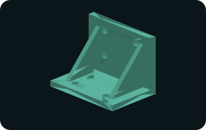
Gusseted mounting bracket
100 × 70 × 80 mm · 8 mm walls · Ø8.5 mounting holes
Original educational geometry · no threads, fit tolerances or material specificationOriginal engineering geometry · editable source
Explore original, dimensioned mechanical CAD studies. Download available STL meshes or edit the parametric OpenSCAD source. New industrial concepts include conveyor sensing, take-up, idler alignment and belt-cleaner mounting geometry.
Each part includes an editable .scad source. Most also include an STL mesh; 8 new industrial studies are source-only in this build and can be rendered in OpenSCAD to export STL. STL is faceted and does not encode units: select millimetres when importing. Downloads do not include STEP or native SolidWorks files.
These are simplified educational models, not standardized catalog hardware. No tolerances, material properties, threads, fits or load ratings are specified. Confirm suitability before fabrication.
NEW · INDUSTRIAL DESIGN STUDIES
The first 36 models include subtractive features: mounting holes, counterbores, relief slots, intersecting passages, and reinforcing ribs. They are original educational designs, not supplier replacements. Hole fits, thread forms, load ratings, sealing and pressure performance are not specified.
Search “industrial” to show only these parts. Open each dimension page for hole coordinates and feature notes.
CAD models

100 × 70 × 80 mm · 8 mm walls · Ø8.5 mounting holes
Original educational geometry · no threads, fit tolerances or material specification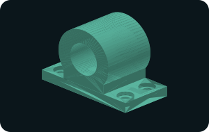
100 × 50 × 68 mm · Ø32 axial bore · four Ø9 base holes
Original educational geometry · no threads, fit tolerances or material specificationØ36 × 45 mm · Ø12 through bore · two relief slots
Original educational geometry · no threads, fit tolerances or material specification80 × 50 × 40 mm · Ø8 longitudinal passage · three Ø6 branches
Original educational geometry · no threads, fit tolerances or material specification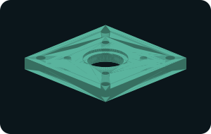
100 × 100 × 12 mm · Ø32 center bore · four Ø6.5 mount holes
Original educational geometry · no threads, fit tolerances or material specification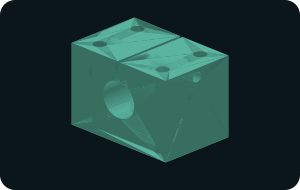
60 × 40 × 45 mm · Ø20 shaft bore · 1.5 mm relief slit
Original educational geometry · no threads, fit tolerances or material specification120 × 70 × 10 mm · two 9 mm slots · 50 mm slot travel
Original educational geometry · no threads, fit tolerances or material specification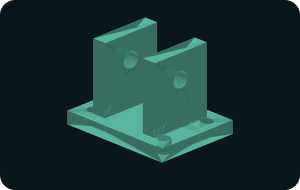
80 × 60 × 65 mm · 32 mm fork gap · Ø12 cross pin holes
Original educational geometry · no threads, fit tolerances or material specification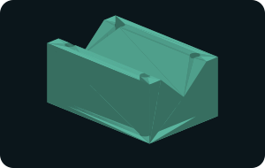
90 × 60 × 45 mm · 90° V groove · four Ø6.5 holes
Original educational geometry · no threads, fit tolerances or material specificationØ100 × 12 mm plate · Ø32 bore · Ø56 × 18 mm hub
Original educational geometry · no threads, fit tolerances or material specification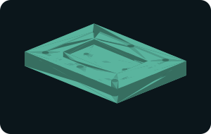
120 × 90 × 16 mm · 70 × 40 × 6 mm pocket · six Ø6.5 holes
Original educational geometry · no threads, fit tolerances or material specification90 × 65 × 75 mm · 8 mm walls · two upright slots
Original educational geometry · no threads, fit tolerances or material specification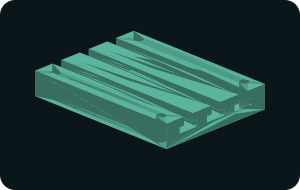
120 × 90 × 20 mm · three longitudinal T-slots
Original educational geometry · no threads, fit tolerances or material specification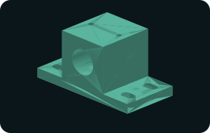
110 × 55 × 60 mm · Ø26 shaft passage · four base slots
Original educational geometry · no threads, fit tolerances or material specificationØ80 flange × 10 mm · Ø40 hub × 30 mm · Ø16 bore
Original educational geometry · no threads, fit tolerances or material specification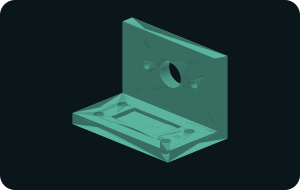
80 × 50 × 60 mm · 8 mm walls · Ø18 upright aperture
Original educational geometry · no threads, fit tolerances or material specification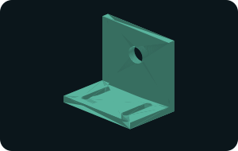
60 × 40 × 55 mm · Ø12.5 aperture · 20 mm base slot travel
Original educational geometry · no threads, fit tolerances or material specification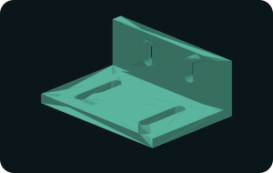
70 × 50 × 30 mm · 5 mm walls · base and upright slots
Original educational geometry · no threads, fit tolerances or material specification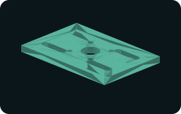
120 × 80 × 8 mm · Ø20 central passage · four radial slots
Original educational geometry · no threads, fit tolerances or material specification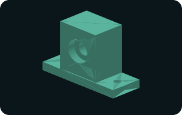
80 × 30 × 55 mm · Ø22 seat × 7 mm depth · Ø12 passage
Original educational geometry · no threads, fit tolerances or material specification60 × 35 × 10 mm · 15 mm groove band · four Ø5.5 holes
Original educational geometry · no threads, fit tolerances or material specification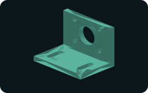
90 × 65 × 65 mm · Ø30 center opening · 20 mm slot travel
Original educational geometry · no threads, fit tolerances or material specification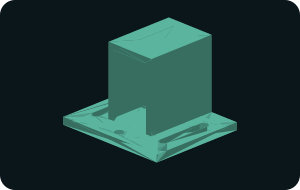
70 × 60 × 55 mm · open front and rear · 24 mm clear width
Original educational geometry · no threads, fit tolerances or material specification60 × 36 × 35 mm · Ø12 rod bore · 2 mm slit
Original educational geometry · no threads, fit tolerances or material specification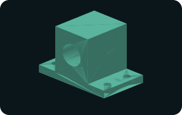
100 × 60 × 70 mm · Ø28 passage · Ø40 × 5 mm recess
Original educational geometry · no threads, fit tolerances or material specification90 × 55 × 60 mm · 74 mm inner span · 10 mm axle slots
Original educational geometry · no threads, fit tolerances or material specification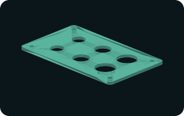
150 × 90 × 4 mm · six apertures · 5 mm corner radii
Original educational geometry · no threads, fit tolerances or material specification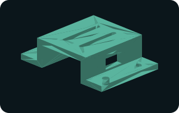
100 × 70 × 30 mm · raised deck · two mounting slots
Original educational geometry · no threads, fit tolerances or material specification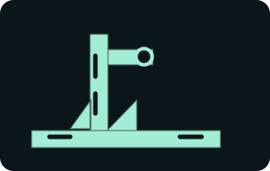
120 × 70 × 90 mm · twin 7 mm height slots · Ø18 sensor aperture
Original educational geometry · OpenSCAD source only; STL mesh not included90 × 70 × 55 mm · Ø30 bearing-seat study · 40 mm adjuster axis
Original educational geometry · OpenSCAD source only; STL mesh not included100 × 60 × 75 mm · Ø12 pivot · Ø16 roller axle · curved adjustment slot
Original educational geometry · OpenSCAD source only; STL mesh not included110 × 55 × 50 mm · 9 mm blade slot · 25 mm mounting travel
Original educational geometry · OpenSCAD source only; STL mesh not included160 × 90 × 8 mm · 120 mm arm reach · slotted wall plate
Original educational geometry · OpenSCAD source only; STL mesh not included70 × 40 × 22 mm · adjustable foot slots · 8 mm strap
Original educational geometry · OpenSCAD source only; STL mesh not included100 × 30 × 4 mm · three slotted openings · 30 mm slot-center spacing
Original educational geometry · OpenSCAD source only; STL mesh not included120 × 50 × 38 mm · twin rod-clearance holes · 80 mm spacing
Original educational geometry · OpenSCAD source only; STL mesh not includedOD 24 · ID 10 · thickness 2 mm
Original educational geometry · no threads, fit tolerances or material specificationOD 16 · ID 8 · length 20 mm
Original educational geometry · no threads, fit tolerances or material specification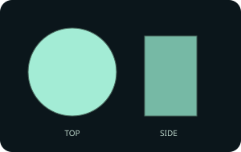
Diameter 12 · length 60 mm
Original educational geometry · no threads, fit tolerances or material specification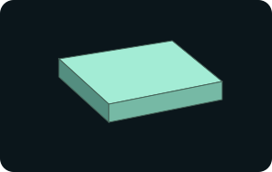
Length 60 · width 40 · thickness 5 mm
Original educational geometry · no threads, fit tolerances or material specificationOD 30 · ID 12 · height 0.5 mm
Original educational geometry · no threads, fit tolerances or material specificationOD 36 · ID 14 · height 5 mm
Original educational geometry · no threads, fit tolerances or material specificationOD 22 · ID 12 · height 15 mm
Original educational geometry · no threads, fit tolerances or material specificationOD 20 · ID 12 · height 50 mm
Original educational geometry · no threads, fit tolerances or material specificationOD 40 · height 6 mm
Original educational geometry · no threads, fit tolerances or material specificationOD 6 · height 30 mm
Original educational geometry · no threads, fit tolerances or material specificationOD 30 · ID 24 · height 60 mm
Original educational geometry · no threads, fit tolerances or material specificationOD 60 · ID 24 · height 8 mm
Original educational geometry · no threads, fit tolerances or material specification
50 × 50 × 6 mm
Original educational geometry · no threads, fit tolerances or material specification
100 × 20 × 10 mm
Original educational geometry · no threads, fit tolerances or material specification
40 × 30 × 25 mm
Original educational geometry · no threads, fit tolerances or material specificationAcross corners 24 · length 15 mm
Original educational geometry · no threads, fit tolerances or material specificationMax OD 32 · height 25 mm · section dimensions in source
Original educational geometry · no threads, fit tolerances or material specificationMax OD 20 · height 45 mm · section dimensions in source
Original educational geometry · no threads, fit tolerances or material specificationMax OD 22 · height 30 mm · section dimensions in source
Original educational geometry · no threads, fit tolerances or material specificationMax OD 30 · height 32 mm · section dimensions in source
Original educational geometry · no threads, fit tolerances or material specificationMax OD 44 · height 30 mm · section dimensions in source
Original educational geometry · no threads, fit tolerances or material specificationMax OD 32 · height 26 mm · section dimensions in source
Original educational geometry · no threads, fit tolerances or material specificationMax OD 36 · height 25 mm · section dimensions in source
Original educational geometry · no threads, fit tolerances or material specificationMax OD 36 · height 5 mm · section dimensions in source
Original educational geometry · no threads, fit tolerances or material specificationMax OD 16 · height 20 mm · section dimensions in source
Original educational geometry · no threads, fit tolerances or material specificationMax OD 20 · height 24 mm · section dimensions in source
Original educational geometry · no threads, fit tolerances or material specificationMax OD 28 · height 4 mm · section dimensions in source
Original educational geometry · no threads, fit tolerances or material specificationMax OD 24 · height 30 mm · section dimensions in source
Original educational geometry · no threads, fit tolerances or material specificationMax OD 28 · height 22 mm · section dimensions in source
Original educational geometry · no threads, fit tolerances or material specificationMax OD 26 · height 28 mm · section dimensions in source
Original educational geometry · no threads, fit tolerances or material specification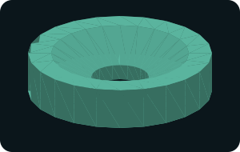
Max OD 32 · height 8 mm · section dimensions in source
Original educational geometry · no threads, fit tolerances or material specificationMax OD 28 · height 20 mm · section dimensions in source
Original educational geometry · no threads, fit tolerances or material specification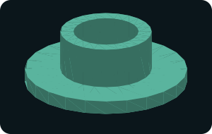
Max OD 16 · height 6 mm · section dimensions in source
Original educational geometry · no threads, fit tolerances or material specificationMax OD 18 · height 6 mm · section dimensions in source
Original educational geometry · no threads, fit tolerances or material specification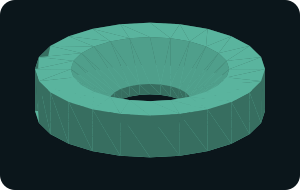
Max OD 18 · height 4 mm · section dimensions in source
Original educational geometry · no threads, fit tolerances or material specificationMax OD 20 · height 21 mm · section dimensions in source
Original educational geometry · no threads, fit tolerances or material specificationMax OD 16 · height 27 mm · section dimensions in source
Original educational geometry · no threads, fit tolerances or material specificationMax OD 14 · height 20 mm · section dimensions in source
Original educational geometry · no threads, fit tolerances or material specificationMax OD 24 · height 14 mm · section dimensions in source
Original educational geometry · no threads, fit tolerances or material specificationMax OD 20 · height 25 mm · section dimensions in source
Original educational geometry · no threads, fit tolerances or material specification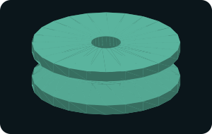
Max OD 40 · height 14 mm · section dimensions in source
Original educational geometry · no threads, fit tolerances or material specificationMax OD 10 · height 30 mm · section dimensions in source
Original educational geometry · no threads, fit tolerances or material specification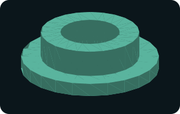
Max OD 28 · height 9 mm · section dimensions in source
Original educational geometry · no threads, fit tolerances or material specification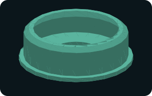
Max OD 24 · height 8 mm · section dimensions in source
Original educational geometry · no threads, fit tolerances or material specificationMax OD 20 · height 18 mm · section dimensions in source
Original educational geometry · no threads, fit tolerances or material specificationMax OD 28 · height 20 mm · section dimensions in source
Original educational geometry · no threads, fit tolerances or material specification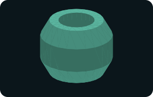
Max OD 16 · height 14 mm · section dimensions in source
Original educational geometry · no threads, fit tolerances or material specification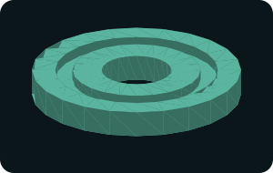
Max OD 36 · height 5 mm · section dimensions in source
Original educational geometry · no threads, fit tolerances or material specificationMax OD 12 · height 30 mm · section dimensions in source
Original educational geometry · no threads, fit tolerances or material specificationMax OD 16 · height 31 mm · section dimensions in source
Original educational geometry · no threads, fit tolerances or material specification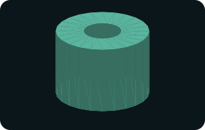
Max OD 20 · height 16 mm · section dimensions in source
Original educational geometry · no threads, fit tolerances or material specification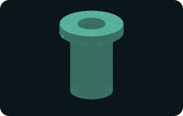
Max OD 18 · height 23 mm · section dimensions in source
Original educational geometry · no threads, fit tolerances or material specificationMax OD 28 · height 3 mm · section dimensions in source
Original educational geometry · no threads, fit tolerances or material specificationMax OD 36 · height 21 mm · section dimensions in source
Original educational geometry · no threads, fit tolerances or material specification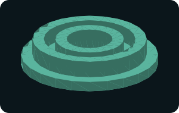
Max OD 36 · height 8 mm · section dimensions in source
Original educational geometry · no threads, fit tolerances or material specificationMax OD 10 · height 25 mm · section dimensions in source
Original educational geometry · no threads, fit tolerances or material specificationMax OD 16 · height 20 mm · section dimensions in source
Original educational geometry · no threads, fit tolerances or material specificationMax OD 20 · height 20 mm · section dimensions in source
Original educational geometry · no threads, fit tolerances or material specificationMax OD 44 · height 20 mm · section dimensions in source
Original educational geometry · no threads, fit tolerances or material specificationMax OD 22 · height 23 mm · section dimensions in source
Original educational geometry · no threads, fit tolerances or material specificationMax OD 24 · height 15 mm · section dimensions in source
Original educational geometry · no threads, fit tolerances or material specificationMax OD 20 · height 22 mm · section dimensions in source
Original educational geometry · no threads, fit tolerances or material specificationMax OD 20 · height 24 mm · section dimensions in source
Original educational geometry · no threads, fit tolerances or material specificationMax OD 36 · height 25 mm · section dimensions in source
Original educational geometry · no threads, fit tolerances or material specification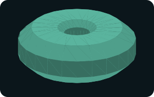
Max OD 18 · height 7 mm · section dimensions in source
Original educational geometry · no threads, fit tolerances or material specification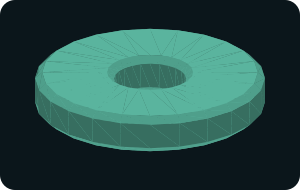
Max OD 32 · height 6 mm · section dimensions in source
Original educational geometry · no threads, fit tolerances or material specificationMax OD 28 · height 22 mm · section dimensions in source
Original educational geometry · no threads, fit tolerances or material specificationMax OD 20 · height 40 mm · section dimensions in source
Original educational geometry · no threads, fit tolerances or material specificationMax OD 24 · height 40 mm · section dimensions in source
Original educational geometry · no threads, fit tolerances or material specification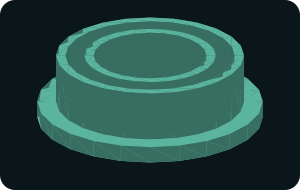
Max OD 24 · height 8 mm · section dimensions in source
Original educational geometry · no threads, fit tolerances or material specificationMax OD 16 · height 34 mm · section dimensions in source
Original educational geometry · no threads, fit tolerances or material specificationMax OD 16 · height 18 mm · section dimensions in source
Original educational geometry · no threads, fit tolerances or material specificationMax OD 36 · height 16 mm · section dimensions in source
Original educational geometry · no threads, fit tolerances or material specification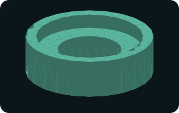
Max OD 24 · height 8 mm · section dimensions in source
Original educational geometry · no threads, fit tolerances or material specificationMax OD 36 · height 25 mm · section dimensions in source
Original educational geometry · no threads, fit tolerances or material specificationMax OD 36 · height 20 mm · section dimensions in source
Original educational geometry · no threads, fit tolerances or material specificationMax OD 22 · height 25 mm · section dimensions in source
Original educational geometry · no threads, fit tolerances or material specificationMax OD 22 · height 18 mm · section dimensions in source
Original educational geometry · no threads, fit tolerances or material specification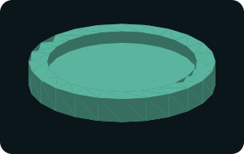
Max OD 40 · height 6 mm · section dimensions in source
Original educational geometry · no threads, fit tolerances or material specificationMax OD 30 · height 24 mm · section dimensions in source
Original educational geometry · no threads, fit tolerances or material specificationMax OD 40 · height 26 mm · section dimensions in source
Original educational geometry · no threads, fit tolerances or material specificationMax OD 24 · height 50 mm · section dimensions in source
Original educational geometry · no threads, fit tolerances or material specificationMax OD 18 · height 28 mm · section dimensions in source
Original educational geometry · no threads, fit tolerances or material specificationMax OD 38 · height 30 mm · section dimensions in source
Original educational geometry · no threads, fit tolerances or material specification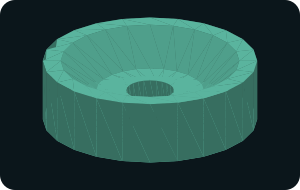
Max OD 36 · height 12 mm · section dimensions in source
Original educational geometry · no threads, fit tolerances or material specificationMax OD 16 · height 40 mm · section dimensions in source
Original educational geometry · no threads, fit tolerances or material specification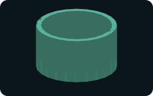
Max OD 32 · height 20 mm · section dimensions in source
Original educational geometry · no threads, fit tolerances or material specification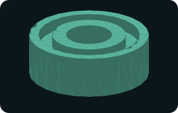
Max OD 26 · height 10 mm · section dimensions in source
Original educational geometry · no threads, fit tolerances or material specification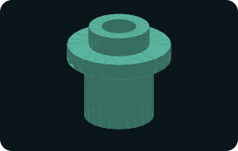
Max OD 24 · height 25 mm · section dimensions in source
Original educational geometry · no threads, fit tolerances or material specification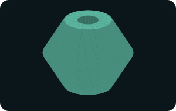
Max OD 34 · height 30 mm · section dimensions in source
Original educational geometry · no threads, fit tolerances or material specificationMax OD 24 · height 18 mm · section dimensions in source
Original educational geometry · no threads, fit tolerances or material specificationMax OD 32 · height 20 mm · section dimensions in source
Original educational geometry · no threads, fit tolerances or material specificationMax OD 36 · height 24 mm · section dimensions in source
Original educational geometry · no threads, fit tolerances or material specification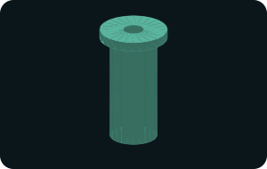
Max OD 20 · height 38 mm · section dimensions in source
Original educational geometry · no threads, fit tolerances or material specificationMax OD 36 · height 24 mm · section dimensions in source
Original educational geometry · no threads, fit tolerances or material specificationMax OD 36 · height 5 mm · section dimensions in source
Original educational geometry · no threads, fit tolerances or material specificationMax OD 32 · height 20 mm · section dimensions in source
Original educational geometry · no threads, fit tolerances or material specificationMax OD 40 · height 8 mm · section dimensions in source
Original educational geometry · no threads, fit tolerances or material specificationMax OD 28 · height 26 mm · section dimensions in source
Original educational geometry · no threads, fit tolerances or material specificationMax OD 24 · height 25 mm · section dimensions in source
Original educational geometry · no threads, fit tolerances or material specificationMax OD 24 · height 25 mm · section dimensions in source
Original educational geometry · no threads, fit tolerances or material specificationMax OD 50 · height 40 mm · section dimensions in source
Original educational geometry · no threads, fit tolerances or material specificationMax OD 18 · height 24 mm · section dimensions in source
Original educational geometry · no threads, fit tolerances or material specificationMax OD 22 · height 40 mm · section dimensions in source
Original educational geometry · no threads, fit tolerances or material specification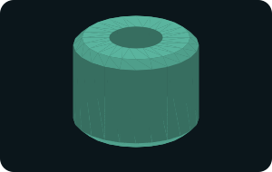
Max OD 14 · height 12 mm · section dimensions in source
Original educational geometry · no threads, fit tolerances or material specification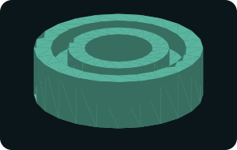
Max OD 30 · height 10 mm · section dimensions in source
Original educational geometry · no threads, fit tolerances or material specificationMax OD 32 · height 25 mm · section dimensions in source
Original educational geometry · no threads, fit tolerances or material specificationMax OD 30 · height 20 mm · section dimensions in source
Original educational geometry · no threads, fit tolerances or material specification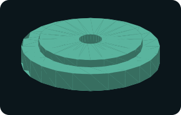
Max OD 48 · height 13 mm · section dimensions in source
Original educational geometry · no threads, fit tolerances or material specification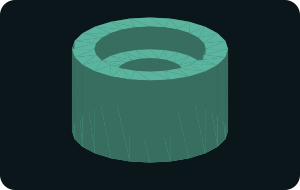
Max OD 28 · height 18 mm · section dimensions in source
Original educational geometry · no threads, fit tolerances or material specificationMax OD 32 · height 22 mm · section dimensions in source
Original educational geometry · no threads, fit tolerances or material specificationMax OD 14 · height 21 mm · section dimensions in source
Original educational geometry · no threads, fit tolerances or material specificationMax OD 30 · height 22 mm · section dimensions in source
Original educational geometry · no threads, fit tolerances or material specification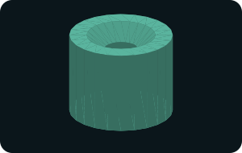
Max OD 18 · height 16 mm · section dimensions in source
Original educational geometry · no threads, fit tolerances or material specificationMax OD 32 · height 22 mm · section dimensions in source
Original educational geometry · no threads, fit tolerances or material specificationMax OD 14 · height 28 mm · section dimensions in source
Original educational geometry · no threads, fit tolerances or material specification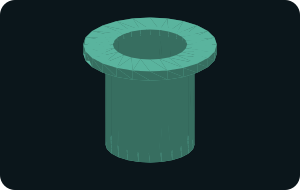
Max OD 36 · height 33 mm · section dimensions in source
Original educational geometry · no threads, fit tolerances or material specificationMax OD 30 · height 12 mm · section dimensions in source
Original educational geometry · no threads, fit tolerances or material specificationMax OD 24 · height 20 mm · section dimensions in source
Original educational geometry · no threads, fit tolerances or material specificationMax OD 32 · height 8 mm · section dimensions in source
Original educational geometry · no threads, fit tolerances or material specificationMax OD 36 · height 14 mm · section dimensions in source
Original educational geometry · no threads, fit tolerances or material specificationMax OD 16 · height 40 mm · section dimensions in source
Original educational geometry · no threads, fit tolerances or material specificationMax OD 28 · height 7 mm · section dimensions in source
Original educational geometry · no threads, fit tolerances or material specificationMax OD 40 · height 24 mm · section dimensions in source
Original educational geometry · no threads, fit tolerances or material specificationMax OD 36 · height 22 mm · section dimensions in source
Original educational geometry · no threads, fit tolerances or material specificationMax OD 28 · height 22 mm · section dimensions in source
Original educational geometry · no threads, fit tolerances or material specificationMax OD 40 · height 8 mm · section dimensions in source
Original educational geometry · no threads, fit tolerances or material specificationMax OD 36 · height 20 mm · section dimensions in source
Original educational geometry · no threads, fit tolerances or material specificationMax OD 28 · height 20 mm · section dimensions in source
Original educational geometry · no threads, fit tolerances or material specificationMax OD 40 · height 14 mm · section dimensions in source
Original educational geometry · no threads, fit tolerances or material specificationMax OD 28 · height 23 mm · section dimensions in source
Original educational geometry · no threads, fit tolerances or material specificationMax OD 20 · height 24 mm · section dimensions in source
Original educational geometry · no threads, fit tolerances or material specificationMax OD 20 · height 24 mm · section dimensions in source
Original educational geometry · no threads, fit tolerances or material specificationMax OD 16 · height 10 mm · section dimensions in source
Original educational geometry · no threads, fit tolerances or material specificationMax OD 44 · height 30 mm · section dimensions in source
Original educational geometry · no threads, fit tolerances or material specificationMax OD 40 · height 15 mm · section dimensions in source
Original educational geometry · no threads, fit tolerances or material specificationMax OD 32 · height 18 mm · section dimensions in source
Original educational geometry · no threads, fit tolerances or material specificationMax OD 16 · height 30 mm · section dimensions in source
Original educational geometry · no threads, fit tolerances or material specificationMax OD 28 · height 8 mm · section dimensions in source
Original educational geometry · no threads, fit tolerances or material specificationMax OD 32 · height 17 mm · section dimensions in source
Original educational geometry · no threads, fit tolerances or material specificationMax OD 26 · height 22 mm · section dimensions in source
Original educational geometry · no threads, fit tolerances or material specificationMax OD 22 · height 24 mm · section dimensions in source
Original educational geometry · no threads, fit tolerances or material specificationMax OD 24 · height 24 mm · section dimensions in source
Original educational geometry · no threads, fit tolerances or material specificationMax OD 34 · height 17 mm · section dimensions in source
Original educational geometry · no threads, fit tolerances or material specificationMax OD 36 · height 22 mm · section dimensions in source
Original educational geometry · no threads, fit tolerances or material specificationMax OD 28 · height 24 mm · section dimensions in source
Original educational geometry · no threads, fit tolerances or material specificationMax OD 34 · height 9 mm · section dimensions in source
Original educational geometry · no threads, fit tolerances or material specificationMax OD 20 · height 50 mm · section dimensions in source
Original educational geometry · no threads, fit tolerances or material specificationMax OD 20 · height 30 mm · section dimensions in source
Original educational geometry · no threads, fit tolerances or material specificationMax OD 30 · height 5 mm · section dimensions in source
Original educational geometry · no threads, fit tolerances or material specificationMax OD 18 · height 10 mm · section dimensions in source
Original educational geometry · no threads, fit tolerances or material specificationMax OD 20 · height 25 mm · section dimensions in source
Original educational geometry · no threads, fit tolerances or material specificationMax OD 38 · height 10 mm · section dimensions in source
Original educational geometry · no threads, fit tolerances or material specificationMax OD 36 · height 15 mm · section dimensions in source
Original educational geometry · no threads, fit tolerances or material specificationMax OD 24 · height 30 mm · section dimensions in source
Original educational geometry · no threads, fit tolerances or material specificationMax OD 44 · height 30 mm · section dimensions in source
Original educational geometry · no threads, fit tolerances or material specificationMax OD 30 · height 24 mm · section dimensions in source
Original educational geometry · no threads, fit tolerances or material specificationMax OD 20 · height 10 mm · section dimensions in source
Original educational geometry · no threads, fit tolerances or material specificationMax OD 36 · height 24 mm · section dimensions in source
Original educational geometry · no threads, fit tolerances or material specificationMax OD 32 · height 20 mm · section dimensions in source
Original educational geometry · no threads, fit tolerances or material specificationMax OD 28 · height 20 mm · section dimensions in source
Original educational geometry · no threads, fit tolerances or material specificationMax OD 20 · height 39 mm · section dimensions in source
Original educational geometry · no threads, fit tolerances or material specificationMax OD 40 · height 8 mm · section dimensions in source
Original educational geometry · no threads, fit tolerances or material specificationMax OD 18 · height 30 mm · section dimensions in source
Original educational geometry · no threads, fit tolerances or material specificationMax OD 36 · height 30 mm · section dimensions in source
Original educational geometry · no threads, fit tolerances or material specificationMax OD 22 · height 22 mm · section dimensions in source
Original educational geometry · no threads, fit tolerances or material specificationMax OD 24 · height 20 mm · section dimensions in source
Original educational geometry · no threads, fit tolerances or material specificationMax OD 36 · height 6 mm · section dimensions in source
Original educational geometry · no threads, fit tolerances or material specificationMax OD 40 · height 26 mm · section dimensions in source
Original educational geometry · no threads, fit tolerances or material specificationMax OD 26 · height 20 mm · section dimensions in source
Original educational geometry · no threads, fit tolerances or material specificationMax OD 44 · height 18 mm · section dimensions in source
Original educational geometry · no threads, fit tolerances or material specificationMax OD 28 · height 23 mm · section dimensions in source
Original educational geometry · no threads, fit tolerances or material specificationMax OD 20 · height 30 mm · section dimensions in source
Original educational geometry · no threads, fit tolerances or material specificationMax OD 30 · height 28 mm · section dimensions in source
Original educational geometry · no threads, fit tolerances or material specificationMax OD 28 · height 26 mm · section dimensions in source
Original educational geometry · no threads, fit tolerances or material specificationMax OD 40 · height 26 mm · section dimensions in source
Original educational geometry · no threads, fit tolerances or material specificationMax OD 36 · height 12 mm · section dimensions in source
Original educational geometry · no threads, fit tolerances or material specificationMax OD 48 · height 28 mm · section dimensions in source
Original educational geometry · no threads, fit tolerances or material specificationMax OD 22 · height 10 mm · section dimensions in source
Original educational geometry · no threads, fit tolerances or material specificationMax OD 40 · height 25 mm · section dimensions in source
Original educational geometry · no threads, fit tolerances or material specificationMax OD 32 · height 18 mm · section dimensions in source
Original educational geometry · no threads, fit tolerances or material specificationMax OD 34 · height 35 mm · section dimensions in source
Original educational geometry · no threads, fit tolerances or material specificationMax OD 30 · height 20 mm · section dimensions in source
Original educational geometry · no threads, fit tolerances or material specificationMax OD 18 · height 18 mm · section dimensions in source
Original educational geometry · no threads, fit tolerances or material specificationMax OD 34 · height 10 mm · section dimensions in source
Original educational geometry · no threads, fit tolerances or material specificationMax OD 36 · height 24 mm · section dimensions in source
Original educational geometry · no threads, fit tolerances or material specificationMax OD 32 · height 16 mm · section dimensions in source
Original educational geometry · no threads, fit tolerances or material specificationMax OD 24 · height 24 mm · section dimensions in source
Original educational geometry · no threads, fit tolerances or material specificationMax OD 28 · height 26 mm · section dimensions in source
Original educational geometry · no threads, fit tolerances or material specificationMax OD 40 · height 20 mm · section dimensions in source
Original educational geometry · no threads, fit tolerances or material specificationMax OD 36 · height 12 mm · section dimensions in source
Original educational geometry · no threads, fit tolerances or material specificationMax OD 22 · height 28 mm · section dimensions in source
Original educational geometry · no threads, fit tolerances or material specificationMax OD 20 · height 36 mm · section dimensions in source
Original educational geometry · no threads, fit tolerances or material specificationMax OD 30 · height 9 mm · section dimensions in source
Original educational geometry · no threads, fit tolerances or material specificationMax OD 38 · height 30 mm · section dimensions in source
Original educational geometry · no threads, fit tolerances or material specificationMax OD 24 · height 40 mm · section dimensions in source
Original educational geometry · no threads, fit tolerances or material specificationMax OD 36 · height 25 mm · section dimensions in source
Original educational geometry · no threads, fit tolerances or material specificationMax OD 34 · height 8 mm · section dimensions in source
Original educational geometry · no threads, fit tolerances or material specificationMax OD 26 · height 24 mm · section dimensions in source
Original educational geometry · no threads, fit tolerances or material specificationMax OD 36 · height 25 mm · section dimensions in source
Original educational geometry · no threads, fit tolerances or material specificationMax OD 36 · height 30 mm · section dimensions in source
Original educational geometry · no threads, fit tolerances or material specificationMax OD 40 · height 18 mm · section dimensions in source
Original educational geometry · no threads, fit tolerances or material specificationMax OD 30 · height 28 mm · section dimensions in source
Original educational geometry · no threads, fit tolerances or material specificationMax OD 44 · height 26 mm · section dimensions in source
Original educational geometry · no threads, fit tolerances or material specificationMax OD 42 · height 27 mm · section dimensions in source
Original educational geometry · no threads, fit tolerances or material specificationMax OD 32 · height 19 mm · section dimensions in source
Original educational geometry · no threads, fit tolerances or material specificationMax OD 22 · height 24 mm · section dimensions in source
Original educational geometry · no threads, fit tolerances or material specificationMax OD 36 · height 22 mm · section dimensions in source
Original educational geometry · no threads, fit tolerances or material specificationMax OD 34 · height 16 mm · section dimensions in source
Original educational geometry · no threads, fit tolerances or material specificationMax OD 20 · height 30 mm · section dimensions in source
Original educational geometry · no threads, fit tolerances or material specificationMax OD 20 · height 30 mm · section dimensions in source
Original educational geometry · no threads, fit tolerances or material specificationMax OD 40 · height 10 mm · section dimensions in source
Original educational geometry · no threads, fit tolerances or material specificationMax OD 20 · height 25 mm · section dimensions in source
Original educational geometry · no threads, fit tolerances or material specificationMax OD 32 · height 14 mm · section dimensions in source
Original educational geometry · no threads, fit tolerances or material specificationMax OD 36 · height 24 mm · section dimensions in source
Original educational geometry · no threads, fit tolerances or material specificationMax OD 48 · height 24 mm · section dimensions in source
Original educational geometry · no threads, fit tolerances or material specificationMax OD 32 · height 25 mm · section dimensions in source
Original educational geometry · no threads, fit tolerances or material specificationMax OD 30 · height 12 mm · section dimensions in source
Original educational geometry · no threads, fit tolerances or material specificationMax OD 32 · height 35 mm · section dimensions in source
Original educational geometry · no threads, fit tolerances or material specificationMax OD 32 · height 22 mm · section dimensions in source
Original educational geometry · no threads, fit tolerances or material specificationMechIntel releases these original geometries under CC0 1.0 Universal. Attribution is appreciated but not required. There is no warranty or certification. File dimensions, not preview scaling, define the geometry.
Created October 15, 2026. Application references and model limitations are included on each new industrial study page. Turn a part study into a portfolio project →